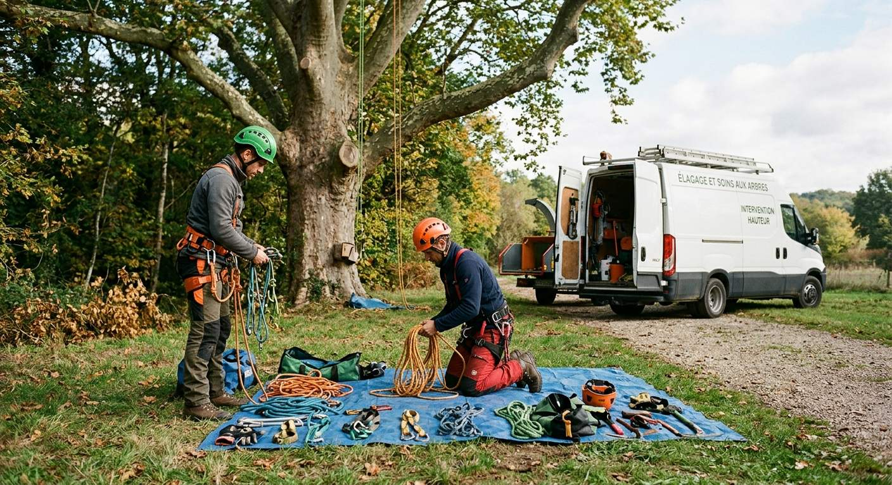

L’entreprise
Un paysagiste installé à Maisons-Laffitte.
Garden City 78 propose des services d'aménagement paysager dans les Yvelines, depuis Maisons-Laffitte.

Qui sommes-nous
Damien Margez, dirigeant
L'entreprise est dirigée par Damien Margez. Vous pouvez la joindre par téléphone ou par e-mail pour parler de votre projet.
- Dirigeant : Damien Margez
- Activité : aménagement paysager
- Commune : Maisons-Laffitte (78)
- SIREN : 880 853 882

Contact
Parlons de votre projet de jardin.
Un appel ou un message suffit pour présenter votre projet à Garden City 78.